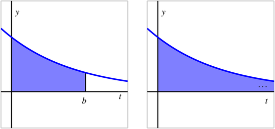
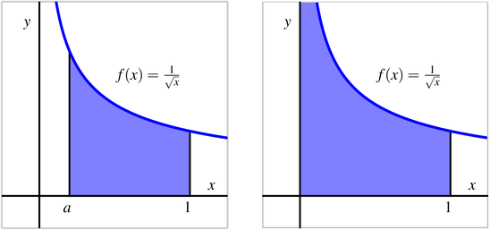
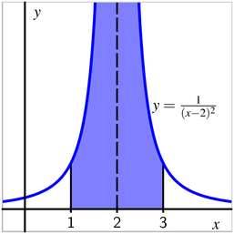

{In this section, we strive to understand the ideas generated by the following important questions:
What are improper integrals and why are they important?
What does it mean to say that an improper integral converges or diverges?
What are some typical improper integrals that we can classify as convergent or divergent?
}
Subsection6.5.1Introduction
Another important application of the definite integral
regards how the likelihood of certain events can be measured. For example, consider a company that manufactures incandescent light bulbs, and suppose that based on a large volume of test results, they have determined that the fraction of light bulbs that fail between times \(t = a\) and \(t = b\) of use (where \(t\) is measured in months) is given by
\[
\int_a^b 0.3 e^{-0.3t} \, dt.
\]
For example, the fraction of light bulbs that fail during their third month of use is given by
Thus about 14.22% of all lightbulbs fail between \(t = 2\) and \(t = 3\).
Clearly we could adjust the limits of integration to measure the fraction of light bulbs that fail during any time period of interest.
Preview Activity
A company with a large customer base has a call center that receives thousands of calls a day. After studying the data that represents how long callers wait for assistance, they find that the function \(p(t) = 0.25e^{-0.25t}\) models the time customers wait in the following way: the fraction of customers who wait between \(t = a\) and \(t = b\) minutes is given by
\[
\int_a^b p(t) \, dt.
\]
Use this information to answer the following questions.
Determine the fraction of callers who wait between 5 and 10 minutes.
Determine the fraction of callers who wait between 10 and 20 minutes.
Next, let's study how the fraction who wait up to a certain number of minutes:
What is the fraction of callers who wait between 0 and 5 minutes?
What is the fraction of callers who wait between 0 and 10 minutes?
Between 0 and 15 minutes? Between 0 and 20?
Let \(F(b)\) represent the fraction of callers who wait between \(0\) and \(b\) minutes. Find a formula for \(F(b)\) that involves a definite integral, and then use the First FTC to find a formula for \(F(b)\) that does not involve a definite integral.
What is the value of \(\ds \lim_{b \to \infty} F(b)\)? Why?
In light of our example with light bulbs that fail, as well as with the problem involving customer wait time in Preview Activity , we see that it is natural to consider questions where we desire to integrate over an interval whose upper limit grows without bound. For example, if we are interested in the fraction of light bulbs that fail within the first \(b\) months of use, we know that the expression
\[
\int_0^b 0.3e^{-0.3t} \, dt
\]
measures this value. To think about the fraction of light bulbs that fail eventually, we understand that we wish to find
Note particularly that we are studying the area of an unbounded region, as pictured in Figure 6.5.1.
Figure6.5.1At left, the area bounded by \(p(t) = 0.3e^{-0.3t}\) on the finite interval \([0,b]\); at right, the result of letting \(b \to \infty\). By “\(\cdots\)” in the righthand figure, we mean that the region extends to the right without bound.
Anytime we are interested in an integral for which the interval of integration is unbounded (that is, one for which at least one of the limits of integration involves \(\infty\)), we say that the integral is improper\knownindex{\lt main>improper integral\lt /main>\lt sub>unbounded region of integration\lt /sub>}. For instance, the integrals
are all improper due to having limits of integration that involve \(\infty\). We investigate the value of any such integral be replacing the improper integral with a limit of proper integrals; for an improper integral such as \(\int_0^\infty f(x) \, dx\), we write
We can then attempt to evaluate \(\int_0^b f(x) \,dx\) using the First FTC, after which we can evaluate the limit. An immediate and important question arises: is it even possible for the area of such an unbounded region to be finite? The following activity explores this issue and others in more detail.
In this activity we explore the improper integrals \( \int_1^{\infty} \frac{1}{x} \, dx\) and \( \int_1^{\infty} \frac{1}{x^{3/2}} \, dx\).
First we investigate \( \int_1^{\infty} \frac{1}{x} \, dx\).
Use the First FTC to determine the exact values of \( \int_1^{10} \frac{1}{x} \, dx\), \( \int_1^{1000} \frac{1}{x} \, dx\), and \( \int_1^{100000} \frac{1}{x} \, dx\). Then, use your calculator to compute a decimal approximation of each result.
Use the First FTC to evaluate the definite integral \( \int_1^{b} \frac{1}{x} \, dx\) (which results in an expression that depends on \(b\)).
Now, use your work from (ii.) to evaluate the limit given by
\[
\lim_{b \to \infty} \int_1^{b} \frac{1}{x} \, dx.
\]
Next, we investigate \( \int_1^{\infty} \frac{1}{x^{3/2}} \, dx\).
Use the First FTC to determine the exact values of \( \int_1^{10} \frac{1}{x^{3/2}} \, dx\), \( \int_1^{1000} \frac{1}{x^{3/2}} \, dx\), and \( \int_1^{100000} \frac{1}{x^{3/2}} \, dx\). Then, use your calculator to compute a decimal approximation of each result.
Use the First FTC to evaluate the definite integral \( \int_1^{b} \frac{1}{x^{3/2}} \, dx\) (which results in an expression that depends on \(b\)).
Now, use your work from (ii.) to evaluate the limit given by
\[
\lim_{b \to \infty} \int_1^{b} \frac{1}{x^{3/2}} \, dx.
\]
Plot the functions \(y = \frac{1}{x}\) and \(y = \frac{1}{x^{3/2}}\) on the same coordinate axes for the values \(x = 0 \ldots 10\). How would you compare their behavior as \(x\) increases without bound? What is similar? What is different?
How would you characterize the value of \( \int_1^{\infty} \frac{1}{x} \, dx\)? of \( \int_1^{\infty} \frac{1}{x^{3/2}} \, dx\)? What does this tell us about the respective areas bounded by these two curves for \(x \ge 1\)?
Our work so far has suggested that when we consider a nonnegative function \(f\) on an interval \([1,\infty]\), such as \(f(x) = \frac{1}{x}\) or \(f(x) = \frac{1}{x^{3/2}}\), there are at least two possibilities for the value of \(\lim_{b \to \infty} \int_1^b f(x) \, dx\): the limit is finite or infinite. With these possibilities in mind, we introduce the following terminology.
{
If \(f(x)\) is nonnegative for \(x \ge a\), then we say that the improper integral \(\int_a^{\infty} f(x) \, dx\)
converges\knownindex{\lt main>improper integral\lt /main>\lt sub>converges\lt /sub>} provided that
\[
\lim_{b \to \infty} \int_a^{b} f(x) \, dx
\]
exists and is finite. Otherwise, we say that \(\int_a^{\infty} f(x) \, dx\) diverges\knownindex{\lt main>improper integral\lt /main>\lt sub>diverges\lt /sub>}.
}
We normally restrict our interest to improper integrals for which the integrand is nonnegative. Further, we note that our primary interest is in functions \(f\) for which \(\lim_{x \to \infty} f(x) = 0\), for if the function \(f\) does not approach \(0\) as \(x \to \infty\), then it is impossible for \(\int_a^{\infty} f(x) \, dx\) to converge.
It is also possible for an integral to be improper due to the integrand being unbounded on the interval of integration. For example, if we consider
\[
\int_0^1 \frac{1}{\sqrt{x}} \, dx,
\]
we see that because \(f(x) = \frac{1}{\sqrt{x}}\) has a vertical asymptote at \(x = 0\), \(f\) is not continuous on \([0,1]\), and the integral is attempting to represent the area of the unbounded region shown at right in Figure 6.5.4.
Figure6.5.4At left, the area bounded by \(f(x) = \frac{1}{\sqrt{x}}\) on the finite interval \([a,1]\); at right, the result of letting \(a \to 0^+\), where we see that the shaded region will extend vertically without bound.
Just as we did with improper integrals involving infinite limits, we address the problem of the integrand being unbounded\knownindex{\lt main>improper integral\lt /main>\lt sub>unbounded integrand\lt /sub>} by replacing such an improper integral with a limit of proper integrals. For example, to evaluate \(\int_0^1 \frac{1}{\sqrt{x}} \, dx\), we replace \(0\) with \(a\) and let \(a\) approach 0 from the right. Thus,
and then we evaluate the proper integral \(\int_a^1 \frac{1}{\sqrt{x}} \, dx\), followed by taking the limit. In the same way as with improper integrals involving unbounded regions, we will say that the improper integral converges provided that this limit exists, and diverges otherwise. In the present example, we observe that
and therefore the improper integral \(\int_0^1 \frac{1}{\sqrt{x}} \, dx\) converges (to the value 2).
We have to be particularly careful with unbounded integrands, for they may arise in ways that may not initially be obvious. Consider, for instance, the integral
\[
\int_1^3 \frac{1}{(x-2)^2} \, dx.
\]
At first glance we might think that we can simply apply the Fundamental Theorem of Calculus by antidifferentiating \(\frac{1}{(x-2)^2}\) to get \(-\frac{1}{x-2}\) and then evaluate from \(1\) to \(3\). Were we to do so, we would be erroneously applying the FTC because \(f(x) = \frac{1}{(x-2)^2}\) fails to be continuous throughout the interval, as seen in Figure 6.5.5.
Figure6.5.5The function \(f(x) = \frac{1}{(x-2)^2}\) on an interval including \(x = 2\).
Such an incorrect application of the FTC leads to an impossible result (\(-2\)), which would itself suggest that something we did must be wrong. Indeed, we must address the vertical asymptote in \(f(x) = \frac{1}{(x-2)^2}\) at \(x = 2\) by writing
since \(\frac{1}{a-2} \to -\infty\) as \(a\) approaches 2 from the left. Thus, the improper integral \(\int_1^2 \frac{1}{(x-2)^2} \, dx\) diverges; similar work shows that \(\int_2^3 \frac{1}{(x-2)^2} \, dx\) also diverges. From either of these two results, we can conclude that that the original integral, \(\int_1^3 \frac{1}{(x-2)^2} \, dx\) diverges, too.
For each of the following definite integrals, decide whether the integral is improper or not. If the integral is proper, evaluate it using the First FTC. If the integral is improper, determine whether or not the integral converges or diverges; if the integral converges, find its exact value.
\item An integral \(\int_a^b f(x) \, dx\) can be improper if at least one of \(a\) or \(b\) is \(\pm \infty\), making the interval unbounded, or if \(f\) has a vertical asymptote at \(x = c\) for some value of \(c\) that satisfies \(a \le c \le b\). One reason that improper integrals are important is that certain probabilities can be represented by integrals that involve infinite limits.
\item When we encounter an improper integral, we work to understand it by replacing the improper integral with a limit of proper integrals. For instance, we write
and then work to determine whether the limit exists and is finite. For any improper integral, if the resulting limit of proper integrals exists and is finite, we say the improper integral converges. Otherwise, the improper integral diverges.
\item An important class of improper integrals is given by
\[
\int_1^{\infty} \frac{1}{x^p} \, dx
\]
where \(p\) is a positive real number. We can show that this improper integral converges whenever \(p > 1\), and diverges whenever \(0 \lt p \le 1\). A related class of improper integrals is \(\ds \int_0^1 \frac{1}{x^p} \, dx\), which converges for \(0 \lt p \lt 1\), and diverges for \(p \ge 1\).
\hrulefill
\begin{exercises}
\item Determine, with justification, whether each of the following improper integrals converges or diverges.
\(\ds \int_e^{\infty} \frac{1}{x(\ln(x))^p} \, dx\), where \(p\) is a positive real number
\(\ds \int_0^1 \frac{\ln(x)}{x} \, dx\)
\(\ds \int_0^1 \ln(x) \, dx\)
\item Sometimes we may encounter an improper integral for which we cannot easily evaluate the limit of the corresponding proper integrals. For instance, consider \(\int_1^{\infty} \frac{1}{1+x^3} \, dx\). While it is hard (or perhaps impossible) to find an antiderivative for \(\frac{1}{1+x^3}\), we can still determine whether or not the improper integral converges or diverges by comparison to a simpler one. Observe that for all \(x > 0\), \(1 + x^3 > x^3\), and therefore
for every \(b > 1\). If we let \(b \to \infty\) so as to consider the two improper integrals \(\int_1^\infty \frac{1}{1+x^3} \, dx\) and \(\int_1^\infty \frac{1}{x^3} \, dx\), we know that the larger of the two improper integrals converges. And thus, since the smaller one lies below a convergent integral, it follows that the smaller one must converge, too. In particular, \(\int_1^\infty \frac{1}{1+x^3} \, dx\) must converge, even though we never explicitly evaluated the corresponding limit of proper integrals. We use this idea and similar ones in the exercises that follow.
Explain why \(x^2 + x + 1 > x^2\) for all \(x \ge 1\), and hence show that \(\int_1^{\infty} \frac{1}{x^2 + x + 1} \, dx\) converges by comparison to \(\int_1^{\infty} \frac{1}{x^2} \, dx\).
Observe that for each \(x > 1\), \(\ln(x) \lt x\). Explain why
\[
\int_2^b \frac{1}{x} \, dx \lt \int_2^b \frac{1}{\ln(x)} \,dx
\]
for each \(b > 2\). Why must it be true that \(\int_2^b \frac{1}{\ln(x)} \, dx\) diverges?
Explain why \(\sqrt{\frac{x^4+1}{x^4}} > 1\) for all \(x > 1\). Then, determine whether or not the improper integral
\[
\int_1^{\infty} \frac{1}{x} \cdot \sqrt{\frac{x^4+1}{x^4}} \, dx
\]
converges or diverges.